Homework 3: PathTracer
Overview
I built a path tracer that follows rays from the camera into a scene and estimates how much light reaches each pixel. The main pieces are ray intersections, a BVH to speed up those intersections, direct and indirect lighting, and adaptive sampling. Together, they let the renderer produce shadows and light that reflects between surfaces.
The biggest difference from the earlier assignments is that the image improves as more random samples are averaged. Adding more light bounces changes the lighting itself, while adding more samples makes that lighting less noisy. The Cornell box makes this distinction easy to see: indirect light brightens the shadows and carries some of the wall colors onto nearby surfaces.
Part 1: Ray generation and intersections
For each pixel, I choose random sample positions inside it and convert them to coordinates between 0 and 1. The camera maps each position onto a plane in front of it using the horizontal and vertical field of view. I then rotate the direction into world space, normalize it, and start the ray at the camera position. Averaging the returned colors gives the final pixel color.
To intersect a triangle, I write its surface as A + u(B − A) + v(C − A) and solve for where it meets the ray. This gives the distance along the ray and the two weights u and v. The hit is inside the triangle when u and v are nonnegative and u + v is at most 1. I also check that the distance is within the ray’s allowed range. The same weights interpolate the vertex normals for shading.
For a sphere, substituting the ray into the sphere equation gives a quadratic. I choose the closest root in the allowed range, using the farther root if the ray starts inside the sphere. Each accepted hit shortens the ray’s maximum distance, so later tests can only replace it with a closer hit. I also widened the camera view for the standalone meshes after the initial renders cut off parts of the models.
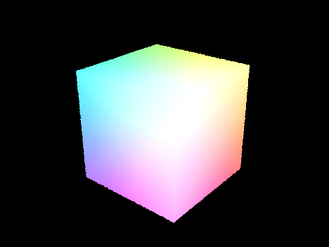
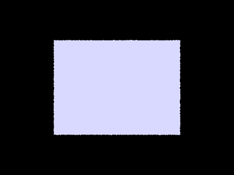
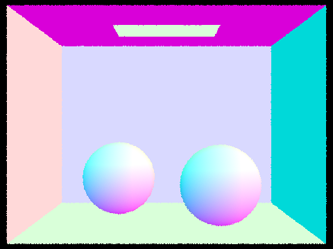
Part 2: Bounding volume hierarchy
The BVH groups nearby objects inside bounding boxes. To build it, I find the box containing all the objects and choose the axis along which their centers spread out the most. I split the objects at the median center on that axis and repeat for each half. Once a group has at most four objects, it becomes a leaf. Using the median keeps the groups balanced, including when several objects have the same center.
For each ray, I find the interval where it is inside the box along each of the three axes. If these intervals do not overlap, the ray misses the whole group. Otherwise, I visit the children and eventually test the objects in the leaves. For the closest hit, I visit the nearer child first. For a shadow ray, I can stop as soon as anything blocks the light.
| Scene | Without BVH | With BVH | Speedup |
|---|---|---|---|
| Cow | 2.32 s | 0.22 s | 10.3× |
| Beetle | 2.71 s | 0.23 s | 11.9× |
| Teapot | 1.44 s | 0.24 s | 5.9× |
These timings use normal shading, one sample per pixel, one thread, and 480 × 360 images. The BVH gives the same images while taking about 6 to 12 times less rendering time. It avoids testing most triangles for each ray, which matters much more than the small cost of checking the boxes. The timings measure rendering, rather than loading the scene or building the tree.
Part 3: Direct illumination
For a diffuse material, I use its reflectance divided by π as the material response. The first lighting method samples random directions uniformly over the hemisphere above the surface. I trace each direction and use the emitted light from the first surface it hits. The contribution is multiplied by the surface’s diffuse reflectance and the cosine of the angle to the normal. I divide by the sampling probability and average the samples.
The second method samples the lights directly. For each sampled light position, I trace a shadow ray and check whether another object is in the way. If the light is visible and above the surface, I add its contribution with the same reflectance and cosine factors, divided by the probability of that light sample. Point lights only need one sample because their position does not change.
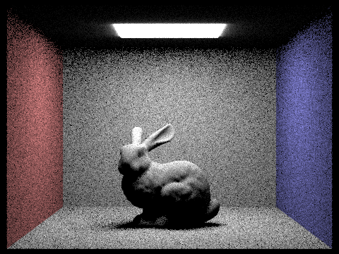
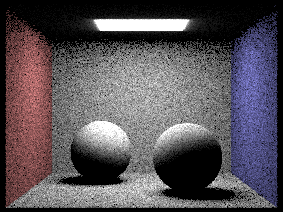
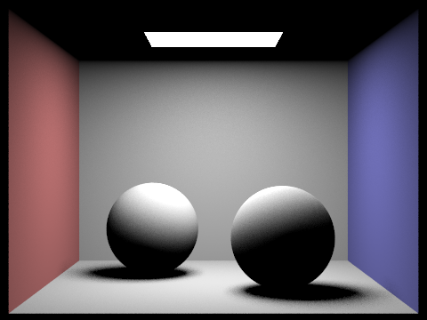
Both comparisons use 64 samples per pixel and 4 samples per light, with one bounce. Light sampling is much smoother at these settings. Most random hemisphere directions miss the small ceiling light, so many samples contribute nothing and a few contribute a lot. Sampling the light directly uses the samples more efficiently, especially around the soft shadows. There is also a difference around the ceiling light because the supplied light and its visible surface are handled differently by the two methods.
Part 3: Light samples and soft shadows
Here I kept one camera sample per pixel and increased the number of light samples. The camera, scene, and maximum depth stay the same. All four images use light sampling.
With one light sample, the shadow boundary is very grainy: a pixel often sees either a blocked or an unblocked sample. More light samples average over different points on the area light, so the shadow becomes a smoother transition. The largest change is from 1 to 4 samples, but 16 and 64 continue to reduce the noise. The object’s outline can still look rough because there is only one camera sample per pixel.
Part 4: Global illumination
Indirect lighting comes from light that has already reflected off another surface. At each hit, I choose a new direction above the surface, favoring directions closer to its normal. I trace another ray and recursively estimate the light arriving from the next surface. I multiply the result by the material response and the cosine, then divide by the sampling probability. The new ray starts just beyond the current hit so it does not immediately hit the same surface again.
When accumulation is enabled, I add direct lighting at each bounce. When it is disabled, I only keep the contribution at the requested depth. A depth of zero shows the light source itself, and a depth of one adds direct lighting. I keep these separate so emitted light is not counted again at every indirect bounce.
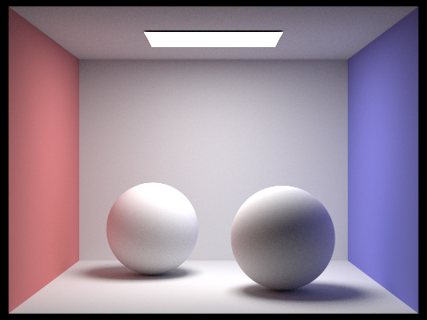
Both images use 1024 samples per pixel and a maximum depth of 5. The bunny uses 4 light samples and the spheres use 1. Indirect light makes the shaded surfaces visible and gives the objects a stronger connection to the surrounding room. The red and blue walls also tint nearby surfaces.
Part 4: Direct and indirect light
For this comparison, I separated the direct contribution from the indirect contribution. Both images use 1024 samples per pixel and 1 sample per light. The indirect image includes bounces 2 through 5; the directly visible light source is excluded from that image.

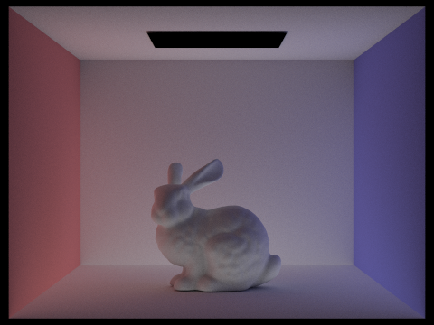
Direct light gives the strongest highlights and the main shadow on the floor, but the underside of the bunny and the shadowed parts of its face are very dark. Indirect light reaches those areas after reflecting off the floor and walls. It is weaker overall, but it fills in the dark regions and brings the wall colors into the scene. Adding these contributions gives a less harsh result than direct lighting alone.
Part 4: Individual light bounces
These images show only the requested bounce, with accumulation and Russian roulette turned off. All use 1024 samples per pixel and 1 light sample.
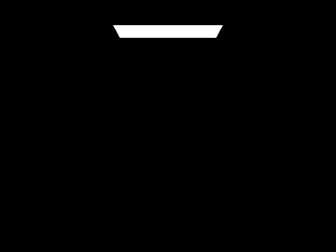
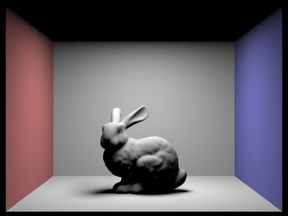
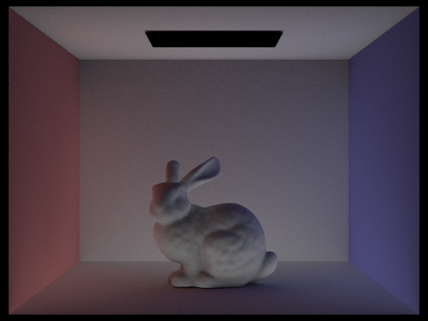
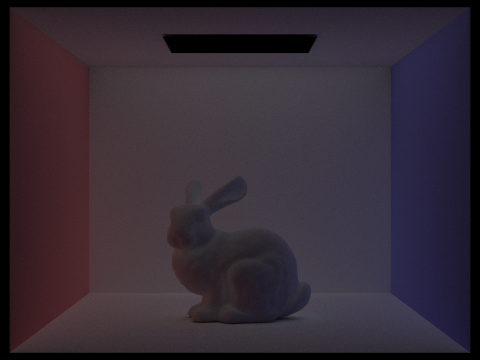
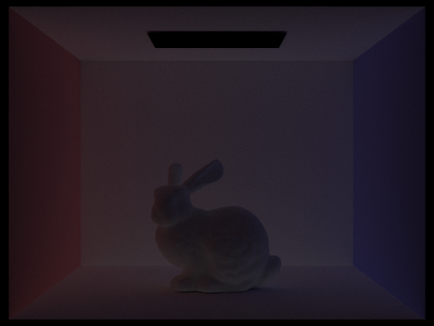
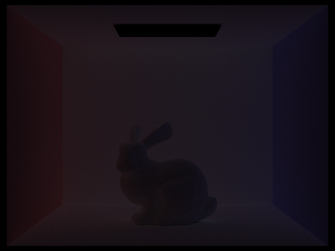
Bounce 0 shows only the light source, while bounce 1 is direct illumination. The second bounce spreads light from the directly lit surfaces into the shadowed parts of the bunny and the room. The colored walls begin to affect the floor and the bunny. The third bounce carries that light farther and fills in more of the remaining dark areas, although its contribution is weaker.
The later bounces become darker because some light is absorbed at every reflection. These extra paths explain why global illumination looks different from the local shading used in a basic rasterizer: a surface can be lit by other surfaces, even when it cannot see the light source directly.
Part 4: Accumulated light bounces
Here I keep all contributions up to the indicated depth. These use the same settings as the individual-bounce images, again without Russian roulette.


Compared with the individual-bounce images, these become brighter as more contributions are added. Going from depth 1 to depth 2 makes the largest visible difference to the dark parts of the bunny. Depth 3 adds more fill light and color bleeding. The changes from depth 4 to depth 5 are smaller, since the later bounces carry less energy.
The two sets show different things: an individual-bounce image isolates where that extra light goes, while an accumulated image shows how it improves the final result.
Part 4: Russian roulette
Tracing every path to a very large depth is expensive. After the first indirect bounce, I give each path a 35% chance of stopping. A surviving path’s contribution is divided by 0.65 to compensate for the paths that stopped. This keeps the expected contribution the same instead of making the image systematically darker. If indirect lighting is enabled, the first indirect bounce is always traced.
These images use accumulation, Russian roulette, 1024 samples per pixel, and 1 light sample. The maximum depths are 0, 1, 2, 3, 4, and 100.


The depth-100 result includes longer paths, but it does not look dramatically different from the lower-depth global-illumination images. Most of the visible light arrives in the first few bounces, and many paths stop early. Russian roulette avoids spending the same amount of work on every long path, at the cost of some extra noise.
Part 4: Samples per pixel
This series uses 4 light samples and a maximum depth of 5, with Russian roulette enabled. Adaptive sampling is disabled so every pixel uses the listed number of samples.

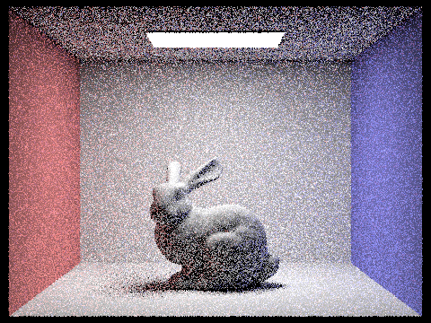


At 1 or 2 samples, the indirect lighting is very noisy and the surface colors are hard to judge. The bunny and its shadow become clearer at 8 and 16 samples. At 64 samples the overall lighting is stable, but grain is still visible. The 1024-sample result is much smoother. More samples reduce the noise without changing which light paths the renderer is trying to estimate.
Part 5: Adaptive sampling
Different pixels need different numbers of samples. A smooth, evenly lit region may settle quickly, while a shadow boundary or a region lit by indirect light can vary much more. Adaptive sampling checks each pixel as it is rendered and stops early once its estimated brightness is stable enough.
I keep the sum of the sample brightnesses and the sum of their squares. From these, I compute the mean and sample variance. Every 64 samples, I estimate the uncertainty as 1.96σ/√n. If this is at most 5% of the mean, I stop sampling that pixel. Otherwise, I continue until it converges or reaches the limit. The final color is divided by the actual sample count, which is also saved for the sample-rate image.


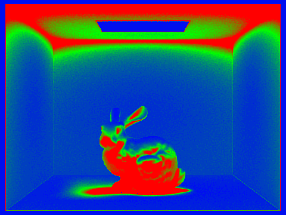
This render allows up to 2048 samples per pixel, with 1 light sample and a maximum depth of 5. Blue means fewer samples and red means more. The directly visible light and simpler regions can stop early, while the bunny, the darker floor regions, and shadow boundaries generally need more work. The ceiling also needs many samples because it is mostly lit indirectly. The result is much smoother than the low-sample images without using the full limit everywhere.
Part 5: A second scene


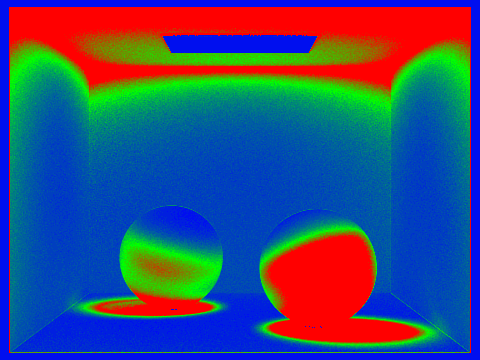
The sphere scene uses the same settings: up to 2048 samples per pixel, batches of 64, 5% tolerance, 1 light sample, and a maximum depth of 5. The sample-rate image shows the extra work around the spheres and their shadows. The lower halves of the spheres take more samples than their brightly lit tops. Broad areas with more consistent lighting need fewer samples. This makes the sampling pattern follow the difficulty of the lighting rather than assigning the same effort to the entire image.
The stopping rule is still an estimate from the samples seen so far. It can leave some noise, especially in difficult dark regions, so convergence does not mean the pixel is exact.